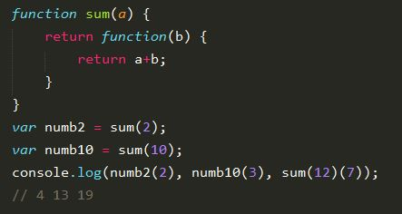

Привет, меня зовут Сережа и я хочу быть разработчиком.
Все началось еще с детства, после просмотра Swordfish. Помните там Хью Джекман должен был взломать банк с пушкой у виска?

Хакни мне банк за 60 секунд.
К сожалению, в школе максмум, что мы делали, это писали непонятные программы в 10 строк на Turbo Pascal.
Окончив школу с золотой медалью и поступив в Харьковский Национальный Университет Радиоэлектроники я встретил прекрасного преподавателя, который научил меня первому языку - C++.
Весь первый курс был потрачен на написание лабораторных всему потоку и реализации каких-то задач, которые сам и придумывал. Была прочитана куча документации, книг и статей. Основы были изучены, три столба ООП были преодолены, змейка и Space Invaders на OpenGL двигались как и надо, но что-то подсказывало, что это все равно не мое.
С тех пор перепробовал C#, Java, Python. Учил основы, кодил десктопные приложения. Попробовал Android.

Нахожусь в поисках
Пока наконец не начал двигаться в сторону веба. Начальные знания HTML/CSS уже были, да и у кого их нет, поэтому попробовал PHP. Больше не пробовал, точно не мое. Java для сервера? Ну может, но какая-то она все равно не такая. Синтаксис у C# покрасивее, и плюсы больше напомниает, но это Майкрософт и виртуальная машина только для винды.

Кто-то когда то назвал шарп мощной лазерной пушкой, установленной на тщедушном ослике. И да, без ослика она практически не работает.
Долго думая, что же выбрать, чтобы было интересно, нравилось и было в тренде, я познакомился с человеком, который расчистил бардак в голове. В декабре 2014 я точно определился, что самое лучшее направление - веб. Но что же выбрать? Бекенд? Не, мне хватило. Вот именно, фронтенд! Это ведь то самое, что так привлекало. К тому же на тот момент из всех языком JavaScript нравился больше всего.
И вот начался долгий путь для становления настоящим разработчиком. Был прочитан весь W3School, пройдены кучи курсов, тестов. Все знания получал сам с помощью Google и YouTube (который, по факту, все равно принадлежит Google). После изучения Bootstrap поучавствовал в верстке одного проекта. После окончания выпустил WebView-приложения на Android, IOS и Winphone. Заинтересовался гибридной мобильной разработкой, попробовал чистую Cordova, адобовский Phonegap и, конечно же, Ionic Framework.
Правда, к Ионику я пришел только после того, как хоть немного разобрался в Angular.js. В последнее время самостоятельными усилиями улучшал свои навыки, делая небольшие проекты. Когда файлов становилось слишком много, а пихать все в один не хотелось, пришлось разобраться с Gulp. Когда возникла необходимость для красивой организации передачи данных между контроллерами, пришлось еще раз покопаться в ангуляре, чтобы на совесть сдать курсовую тому самому преподавателю, который и открыл мир программирования.
И это на самом деле так здорово, что и не описать. Каждый день узнавать что-то новое: библотеку, фреймворк или просто события из мира IT.
Пример использования замыкания, которое, к своему стыду, только недавно понял
Но все же, почему именно JS? Не потому что это самый популярный язык. Он прост и универсален: пиши анимашку на JQuery, или роутинг на Angular, можно даже написать сервер на node.js. Создать игру? Легко, просто надо разобрать Canvas. Просто бери и делай магию. Как сказал великий и ужасный Гейб, создатель Valve:

Programmers of tomorrow are the wizards of the future.
Что же касается ОС, то всю жизнь сидел на винде, но после открытия линукса так и не успокоился. В результате имею Dual Boot на всех машинах. Debian, Ubuntu, Arch, Fedora, OpenSuse, CentOS - все перепробовал. Почувствовал удобство даже недавно, когда не смог из под винды залить приложение на Heroku. А из под ElementaryOS смог.
Что дальше? В планах до конца разобраться с ES6, ведь это спецификация, которую будут поддерживать все браузеры. Также хотелось бы уметь писать небольшой Rest API, используя MongoDB+Express+Node.js. Из всех фреймворком на первом месте по изучению стоит React, ведь это просто разрыв шаблона. А после выхода React Native не успокоюсь, пока не напишу какое-нибудь мобильное приложение.
Спасибо за внимание.